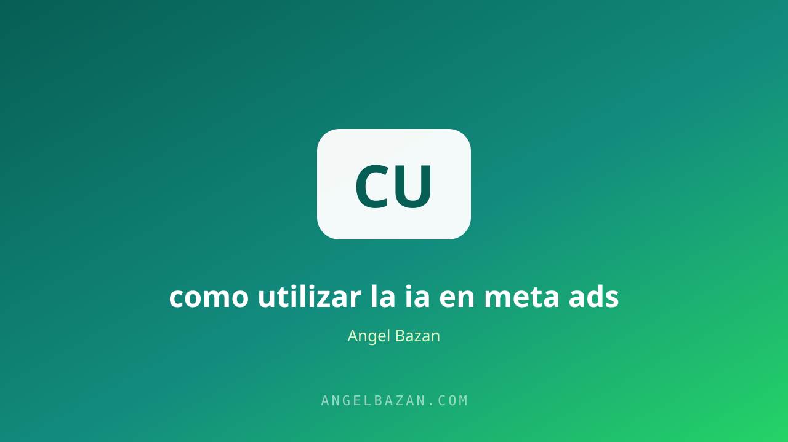

Cómo utilizar la IA en Meta Ads para optimizar tus campañas
La IA ya no es opcional en Meta Ads: define creativos, audiencias y mensajes. Esta guía te muestra dónde aplicarla y dónde no.
En este artículo
La inteligencia artificial ya no es una herramienta opcional en Meta Ads: es el motor que decide a quién se le muestra tu anuncio, en qué momento y con qué frecuencia. La pregunta dejó de ser si el algoritmo usa IA, y pasó a ser si tú la usas para alimentarlo mejor. Quien optimiza con IA no trabaja más horas: trabaja mejor y deja que la máquina haga el trabajo pesado de probar y aprender.

El punto clave es entender qué le toca a la IA y qué te toca a ti. La IA genera creativos, escribe copys, agrupa audiencias y predice resultados; tú defines la oferta, el mensaje y el criterio para decidir qué se queda y qué se descarta. En esta guía recorremos cada punto del proceso con ejemplos prácticos.
Creativos generados con IA
El creativo es el 80% del resultado de cualquier campaña, y la IA hoy genera opciones en minutos que antes tomaban días. Las herramientas de generación de imagen y video permiten producir variaciones de tu anuncio para testear sin costos de producción altos.
- Videos con IA: recrea tu producto o servicio en escenas, con subtítulos automáticos y ganchos en los primeros segundos.
- Imágenes para testeo: genera 5-10 versiones del mismo mensaje para descubrir cuál conecta antes de invertir en producción profesional.
- Storyboards: pídele a la IA que convierta tu guion en planos y ángulos listos para grabar.
El flujo de testeo es simple: lanza 3-5 creativos por conjunto, deja que el algoritmo aprenda y duplica el que gana. El creativo deja de ser un gasto de producción para convertirse en un experimento barato que la IA ejecuta por ti.
La base de contenido que alimenta esos creativos se trabaja en cómo crear contenido que venda.
Audiencias y optimización con IA
Los públicos amplios y las campañas Advantage+ son la prueba de que Meta confía en su IA para encontrar compradores. El algoritmo aprende con cada conversión, así que tu trabajo es darle datos limpios: un píxel bien instalado, eventos correctos y suficiente presupuesto para la fase de aprendizaje.
El punto más importante: si tu cuenta está configurada con el evento de conversión correcto (compra, mensaje o lead), la IA optimiza hacia ese objetivo y no hacia métricas vanidosas como el alcance.
Cuando el algoritmo ya conoce a tus clientes, la optimización manual pasa a segundo plano. El detalle técnico de cuentas y escalado lo cubrimos en cómo escalar una cuenta de Meta Ads y la estructura de campañas la armas con nuestro estructurador de campañas.
Copywriting y mensajes con IA
La IA escribe rápido, pero tú decides el tono y la promesa. Dale contexto: producto, cliente ideal, objeción principal y oferta; luego pídele 10 variaciones del titular y del texto del anuncio. El prompt con contexto siempre supera al prompt genérico.
Una técnica sencilla: pide a la IA que escriba el anuncio desde la perspectiva del cliente que ya compró y se lo cuenta a un amigo. Ese tono de recomendación suele convertir mejor que el tono de venta.
Cada variación debe hablar del cliente, no de tu negocio. Para afinar mensajes que conviertan, el método completo está en cómo crear anuncios para Facebook que vendan.
Las herramientas de IA que ya trae Meta
- Advantage+ Shopping: combina tus campañas y deja que la IA maximice el retorno del ecommerce.
- Ventajas del presupuesto: distribuye el gasto en tiempo real hacia las campañas que rinden.
- Mejoras automáticas: la IA ajusta creativos y públicos sin que pierdas el control de tu marca.
- Ventajas de audiencia: amplía tu targeting manteniendo tu segmentación base como referencia.
Estas herramientas funcionan mejor cuando tu cuenta ya tiene historial; en cuentas nuevas, úsalas con presupuesto de aprendizaje claro y audiencias que aporten contexto al algoritmo.
La inversión inicial recomendada y cómo testear sin quemar presupuesto está en nuestra calculadora de presupuesto de testeo.
Tu flujo de trabajo con IA paso a paso
- Define la oferta y el cliente antes de abrir cualquier herramienta.
- Genera 5-10 variaciones de creativo y copy con IA.
- Lanza con públicos amplios y deja que el algoritmo aprenda.
- Analiza los datos de la primera semana: CTR, costo por resultado y frecuencia.
- Duplica lo que funciona y mata lo que no.
- Escala el presupuesto en pasos del 20-30%.
El tráfico que llega a tu WhatsApp merece un cierre automatizado; eso lo vemos en automatizar WhatsApp con IA.
Preguntas frecuentes
¿La IA reemplaza al publicista? No: lo acelera. La estrategia, la oferta y el criterio de decisión siguen siendo humanos.
¿Vale la pena usar públicos amplios con IA? Sí, si tu píxel ya tiene datos de conversión; si no, empieza por audiencias pequeñas para educar al algoritmo.
¿Cuánto tiempo necesita el algoritmo para aprender? En promedio de 3 a 7 días o 30-50 conversiones por conjunto de anuncios antes de juzgar resultados.

Angel Bazán
Especialista en funnels, Meta Ads y WhatsApp + IA. Ayudo a negocios a vender más combinando tráfico pagado con conversaciones automatizadas.
Conoce más sobre mí →Aprende a crear y vender productos digitales con Meta Ads, WhatsApp e IA
Clases en vivo, estrategias y recursos para construir tu sistema desde cero. 🚀
Únete gratis al grupo